1. Getting Started
To install this theme you must have a working version of WordPress already installed. For information regarding the installation of the WordPress platform, please see the WordPress Codex - http://codex.wordpress.org/Installing_WordPress
Theme uses basic, core WordPress options (pages,post,categories) to create site that is easy to use even for very beginners. There is no option panel with many settings in it, all available theme options are available from inside the WordPress "Theme Customizer" that allows site admins to tweak theme settings and see a preview of those changes in a real time. You'll be able to upload your logo or change the site title and tagline, change background color, upload background image, change header image and more.
* Please note that the pictures in the Live Preview are for the presentation purposes only and are not included with the theme.
1.1 Installation
When you are ready to install the theme, you must first upload the theme files and then activate the theme itself. The theme files can be uploaded in two ways:
- FTP Upload: Using your FTP program, upload the non-ziped theme folder "maishawp" into the /wp-content/themes/ folder on your server
- WordPress Upload: Navigate to Appearance > Add New > Upload. Go to browse, and select the ziped theme folder "maishawp.zip". Hit "Install Now" and the theme will be uploaded and installed.
Once the theme is uploaded, you need to activate it.
After activation, you should see Maisha Theme as an active theme:
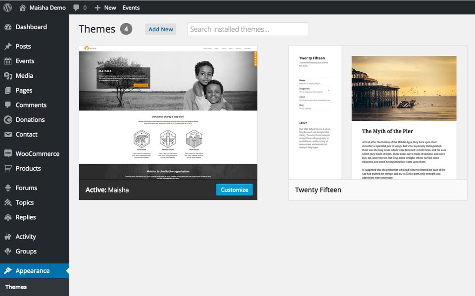
1.2 Plugins used with this theme:
1. BuddyPress: https://buddypress.org/ - run your own social network
2. bbPress: https://bbpress.org/ - forums made the WordPress way
3. Contact Form 7: https://wordpress.org/plugins/contact-form-7/ - contact form
4. Give: https://wordpress.org/plugins/give/ - empower your cause: start accepting donations on WordPress with Give.
5. RICG Responsive Images: https://wordpress.org/plugins/ricg-responsive-images/ - as soon as an image is uploaded through the media interface, WordPress automatically creates three variations of the image at different sizes.
6. The Events Calendar: https://wordpress.org/plugins/the-events-calendar/ - plugin that lets you easily share your events.
7. Soliloquy Slider plugin can be found inside the plugins folder
8. WooCommerce: http://wordpress.org/plugins/woocommerce/ - create your own shop
Plugins mentioned above are not mandatory for theme to work!
1.3 Introducing WordPress Theme Customizer?
The Theme Customization screen (i.e. "Theme Customizer") allows site admins to tweak the theme settings and see a preview of those changes in real time.
Maisha has implemented customizer and added some useful options to help you style theme background, color elements, upload image logo, to choose different blog layouts and a lot more.
Navigate to Appearance > Customize
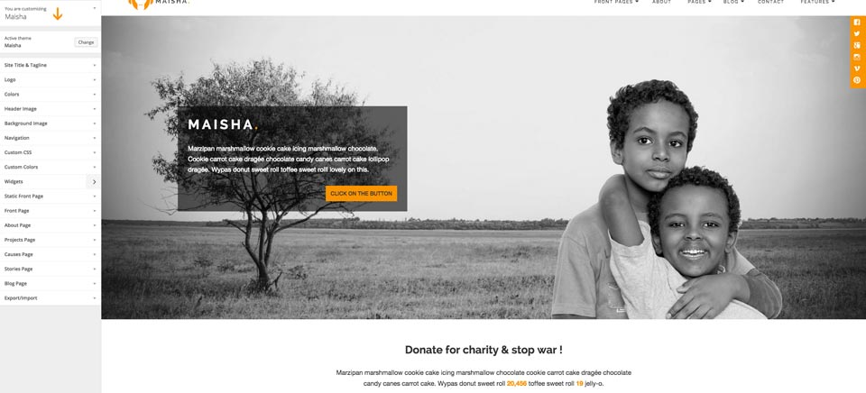
On the left side, you'll find Theme Customizer with all the options it contains.
OPTIONS:
1. Site title and tagline
This gives you freedom to change the title and the tagline for your site.
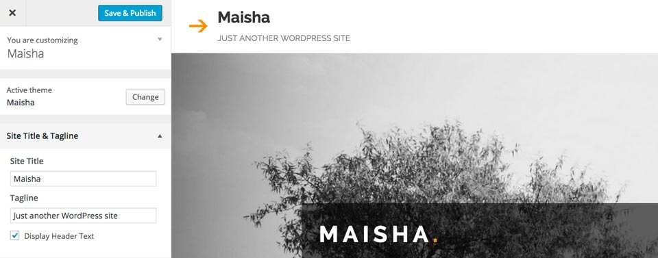
2. Logo
This gives you the option to upload image logo instead of the site title and tagline. For the fixed header, logo image should be 180x61px. For standard or alternative header you can upload logo image in size you want.
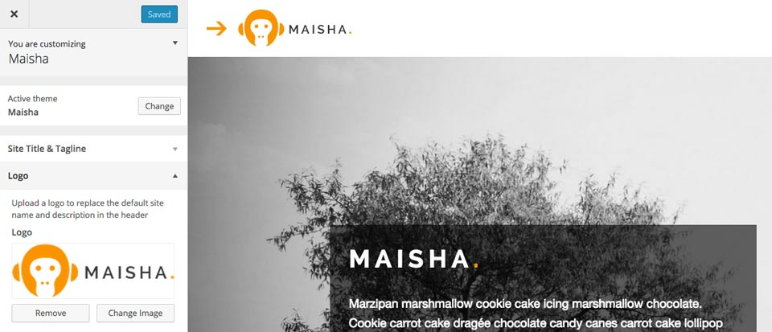
3. Search
This gives you the option to hide or show search box.
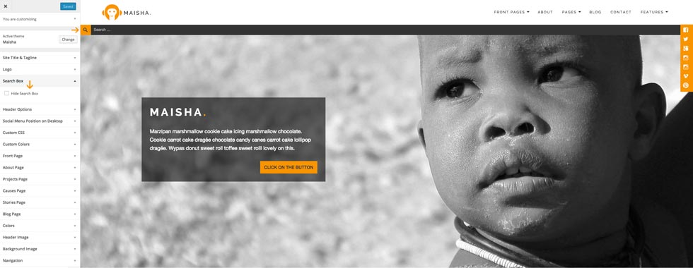
4. Colors
This gives you the option to change the background color.
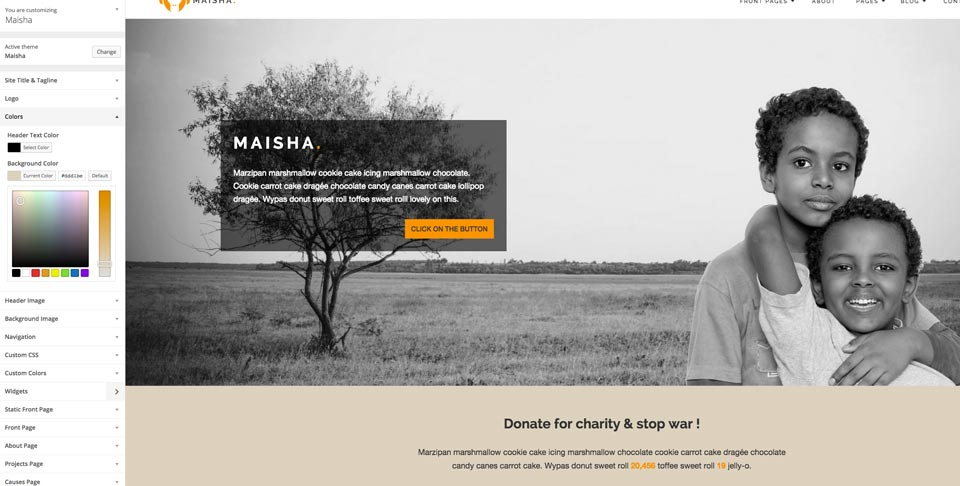
5. Header Image - available on post page
This gives you the option to change header image of the post page.
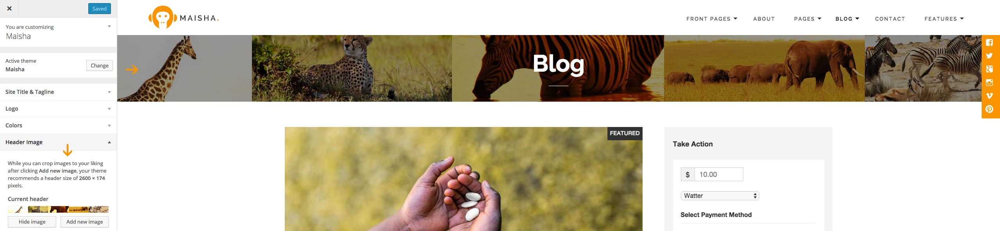
6. Background Image
This gives you the option to change background image.
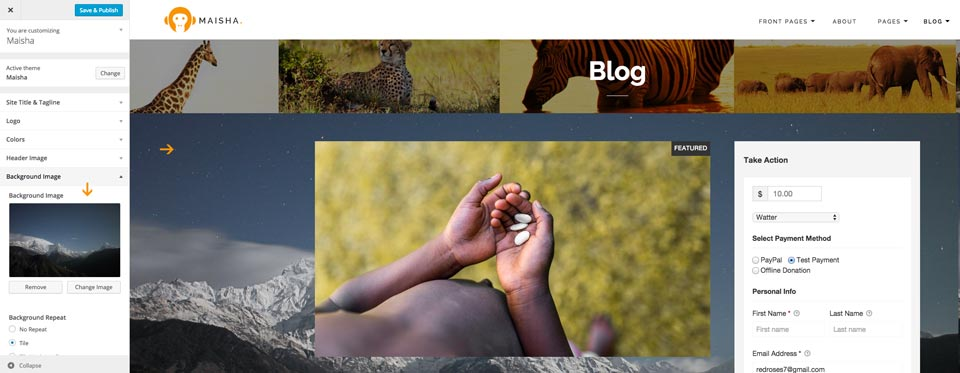
7. Custom CSS
Add Custom CSS to your WordPress site without a hassle.
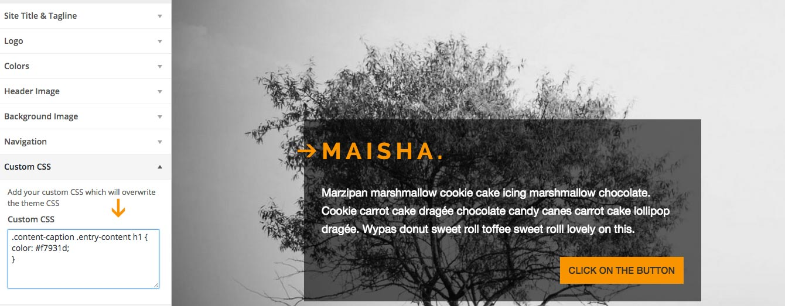
8. Custom Colors
Change most of the color elements easily by using the color picker.
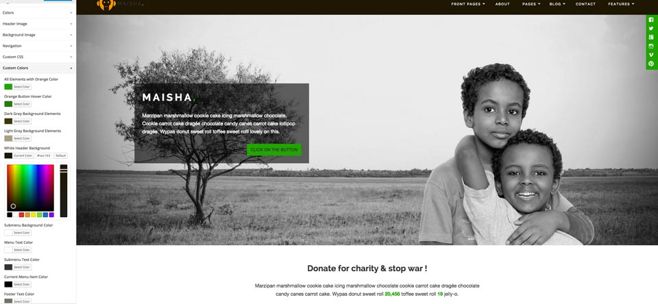
9. Header Options
You can choose fixed header, standard header or alternative one. If you choose "fixed" header logo image should be 180x61px.
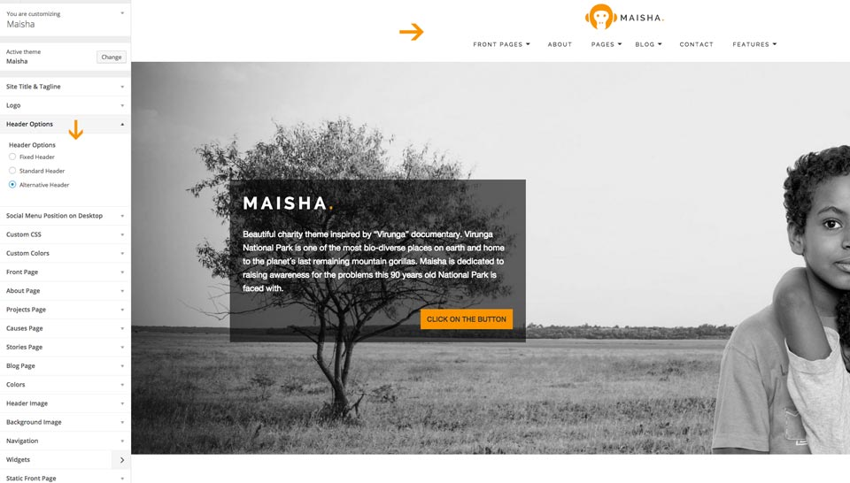
10. Social Menu Position on Desktop
You can move the social block to the top or bottom by just adding the number.
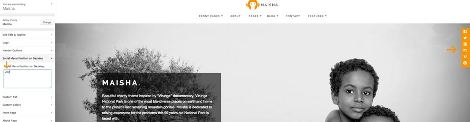
11. Widgets
This gives you the option to preview all available widgets on the page you are viewing and to add or change widgets inside available Widgetized Areas.
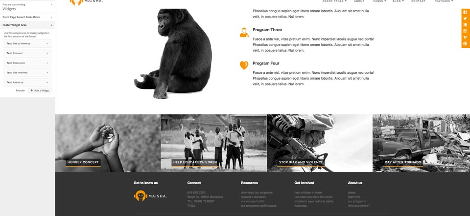
1.4 Soliloquy Slider
To install the slider navigate to the Plugins > Add new > Upload > Choose file.

After you install the plugin you'll see the new menu "Soliloquy" (if there is a new slider update, update it before you continue), verify your license key (included within the plugins folder) and than you'll get available addons for the installation.
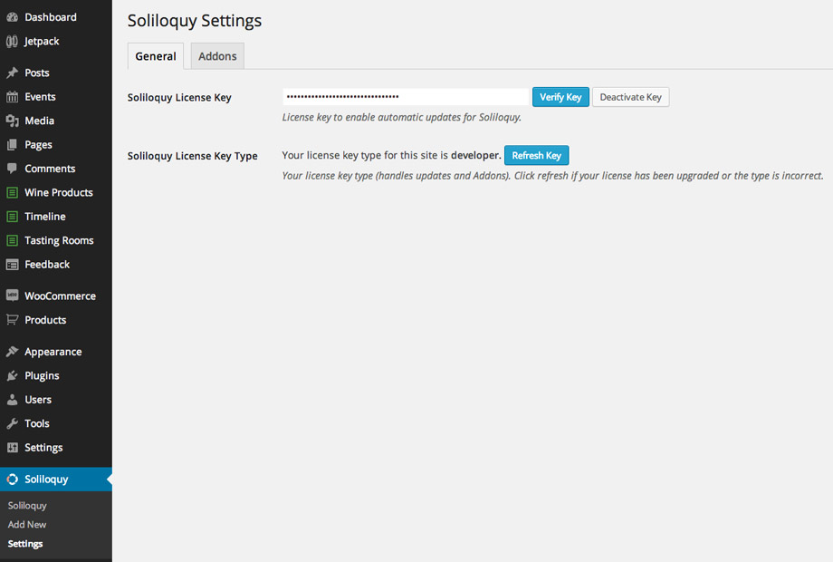
Now you can install and activate Soliloquy addons."Themes", "Featured Content" and "Thumbnail" addons are used in the demo.
If you don't see addons at first click on the "refresh button" and they will show up.
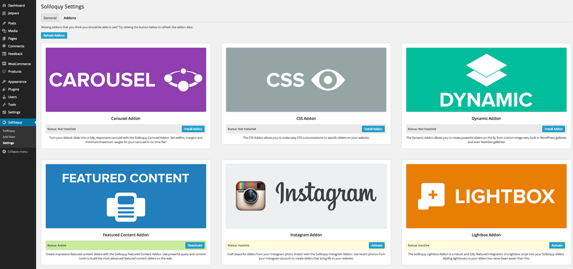
To create slider click on "Add New" option and name it. Now you can play and create your slider using many options and features that this great slider offers.
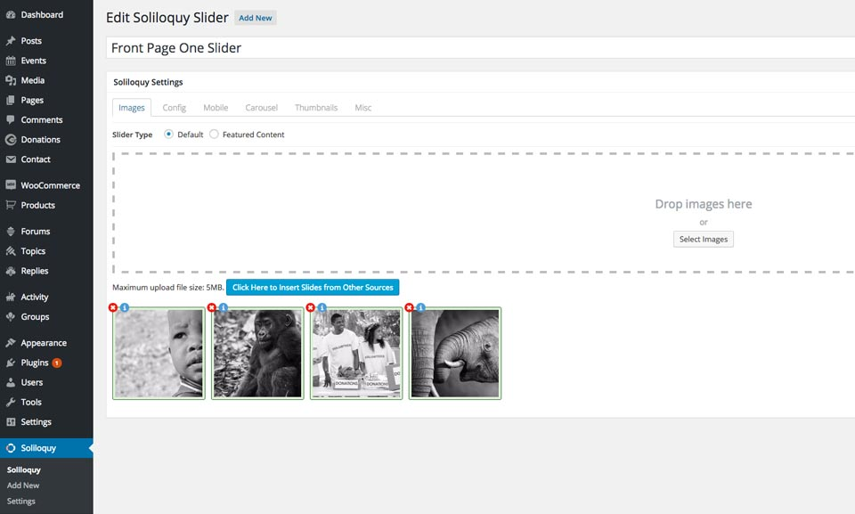 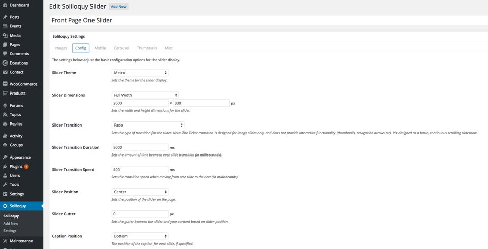
When you finish with creating your slider, navigate to the post, page or widget where you want to use your slider. Inside pages and posts, on the top of the edtior you`ll find "Soliloquy" slider button.
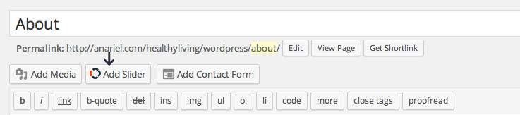
Click on the button to open the new window. There you'll be able to choose created sliders and put them inside the page or post:
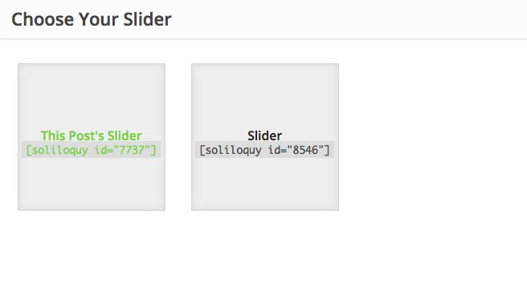
If you want to use slider inside the widgets sidebar, navigate to Appearance > Widgets, there you'll find "Soliloquy" widget. Drag and drop widget to one of the available sidebars and choose the slider you want to show :